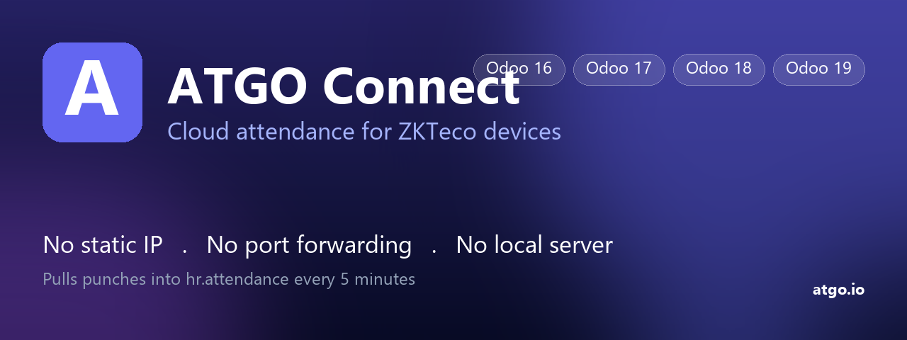

Stop fighting with static IPs and port forwarding. Point your ZKTeco device at ATGO Cloud, then let Odoo pull punches every 5 minutes. No inbound network access required.
ZKTeco devices push punches to adms.atgo.io
(or the short URL you copy from the ATGO portal during device setup).
Works with any ZK device that supports ADMS / Cloud Server config.
This module polls ATGO every 5 minutes via API key, creates
hr.attendance, and acks logs so they aren't fetched twice.
Pure outbound — no port forwarding on the Odoo host.
hr.attendancehr.employee.barcode$19 per Odoo database (one-time purchase via Odoo Apps Store, OPL-1 license). Includes free updates for the Odoo version you bought it for. The ATGO Cloud platform itself is free for 1 ZKTeco device; paid plans on atgo.io/pricing unlock more devices and HR features.
Contact: codekhongbug@gmail.com
Source: GitHub.
Issues: tracker.